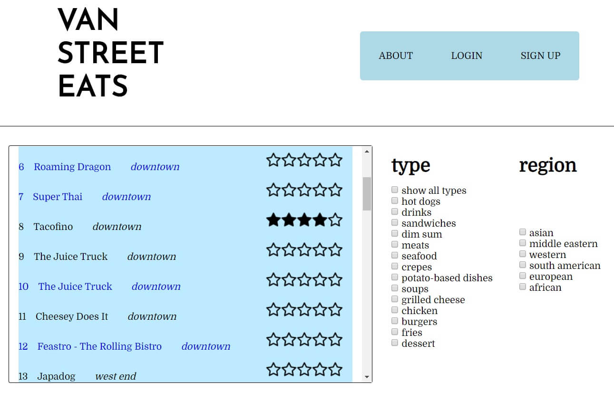

gabe
full stack software engineer
VAN STREET EATS
internet computing technologies final project
context
For a semester long final project, we were tasked to create a dynamic website using php, mySQL and AJAX technologies. Our requirements were that users must be able to sign up and sign in with encrypted passwords and that we displayed linkable cards from a list page. On this list page, the content cards must have a way to categorize initially and a way to filter further. Finally we were to document the ER diagram, coding process and features in the final report shown below.